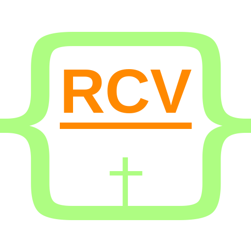

---
redirect_from:
  - "/blog/"
  - "/articles/"
---
<!DOCTYPE html>
<html lang="en">
<head>
  <!-- Global site tag (gtag.js) - Google Analytics -->
  <script async src="https://www.googletagmanager.com/gtag/js?id=UA-17104811-4"></script>
  <script>
    window.dataLayer = window.dataLayer || [];
    function gtag(){dataLayer.push(arguments);}
    gtag('js', new Date());

    gtag('config', 'UA-17104811-4');
  </script>
  <meta charset="UTF-8">
  <title>Articles - The Holy Bible: Revised Common Version (RCV)</title>
  <meta content="en-us" http-equiv="Content-Language" />
  <meta content="Bible" name="genre" />
  <meta content="English" name="language" />
  <meta property="og:title" content="Articles - The Holy Bible: Revised Common Version (RCV)" />
  <meta itemprop="name" content="Articles - The Holy Bible: Revised Common Version (RCV)" />
  <meta name="description" content="This page lists the various articles I have written." />
  <meta id="meta-tag-description" property="og:description" content="This page lists the various articles I have written." />
  <meta itemprop="description" content="This page lists the various articles I have written." />
  <meta name="viewport" content="width=device-width">
  <link rel="icon" href="../images/rcv-icon.png" type="image/png" />
  <link rel="apple-touch-icon" href="../images/rcv-icon-120.png"> 
  <link rel="apple-touch-icon" sizes="180x180" href="../images/rcv-icon-180.png">  
  <link rel="apple-touch-icon" sizes="152x152" href="../images/rcv-icon-152.png">  
  <link rel="apple-touch-icon" sizes="167x167" href="../images/rcv-icon-167.png">
  <link rel="shortcut icon" href="../images/rcv-icon.png" type="image/png" />
  <link href="../css/rcv-styles.css" rel="stylesheet" type="text/css" />
</head>

<body>
<div id="banner">
  
  <h1 class="site-title">The Holy Bible: Revised Common Version</h1>
</div>
  
<div id="page">
<header>
  <nav>
    <ul class="topnav">
      <li><a href="../index.html">Home</a></li>
      <li><a href="ot.html">Old Testament</a></li>
      <li><a href="nt.html">New Testament</a></li>
      <li><a href="reading.html">Daily Reading</a></li>
      <li><a href="devotional.html">Devotional</a></li>
      <li><a href="glossary.html">Glossary</a></li>
      <li><a href="books.html">Books</a></li>
      <li><a href="download.html">Download</a></li>
      <li><a href="purchase.html">Purchase</a></li>
    </ul><!--topnav-->
  </nav>
  <h2 class="book-title">Articles</h2>
</header>

<section>
  <h3>Article Listing</h3>
  <ul>
    <li><a href="articles/christmas.html">Christmas in the Scriptures</a></li>
    <li><a href="gospel.html">A Gospel Message: How can I be Born Again?</a></li>
    <li><a href="articles/add-mobi-file-to-kindle-library.html">How to Add a MOBI File to Your Kindle Library</a></li>
    <li><a href="articles/how-to-read-an-epub-file.html">How to Read an ePub File</a></li>
    <li><a href="articles/introduction-gospel-of-john.html">Introduction to the Gospel of John</a></li>
    <li><a href="articles/calvin-sermons-on-job.html">New Book for Download: Sermons of Master John Calvin upon the Book of Job</a></li>
    <li><a href="articles/webster-bible-download.html">The Noah Webster Bible in PDF Available on the RCV Site</a></li>
    <li><a href="articles/communion.html">A Prayer for Communion</a></li>
    <li><a href="articles/what-are-the-ten-commandments.html">What are the Ten Commandments?</a></li>
    <li><a href="articles/why-repentance-is-necessary.html">Why Repentance is Necessary</a></li>
    <li><a href="articles/why-should-i-read-the-bible.html">Why Should I Read the Bible?</a></li>
  </ul>

  <nav class="topnav clear">
    <p><a href="#banner">Top</a></p>
  </nav><!--botnav-->
</section>
</div><!--page-->

<footer class="site-foot">
  <p><a href="gospel.html">A Gospel Message</a></p>
</footer>
</body>
</html>
